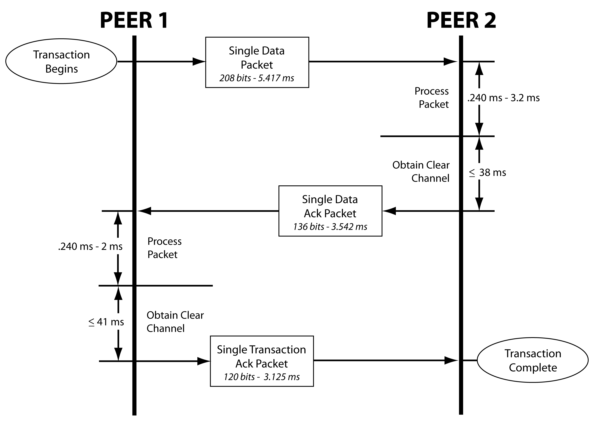

ONE-NET Protocol Design
Issues
Roger Meadows
3/16/09
Table of Contents
Issue 2009.001: Clear Channel Access Timing
Summary:
Version 1.5.0 of the ONE-NET Specification defines a Response Timeout
value as "The maximum amount of time (50ms) that a Device waits for a
response for its message". The specification also defines upper and
lower limits on the amount of time a device has to process a packet
(see section 6.2 Single Transactions). The specification also defines a
Channel Back-Off Time as "The time (5ms) that a Device waits, after
sensing that the channel is busy, before it tries sensing the channel
again". The specification is not very clear on the relationship of
Response Timeout, processing time requirements, and Channel Back-Off
Time.
The ONE-NET Specifiaction should be amended to include an explanation
of the relationship between Response Timeout, packet processing time
limits, transmission time, and clear channel access time.
Background:
Lets start by identifying the component operations involved in sending
a packet and hearing a response to that packet. For this discussion we
will assume that timing starts just before the sender initiates the
transmission of the apcket being sent and continues until just after
the response packet has been received.
- Transmission time of the packet being sent (5.417 ms for a
208 bit single data packet at 38,400 bps).
- The time the receiver needs to process the packet and be
ready to send the response (between 0.240 ms and 3.2 ms as listed on
page 58 of version 1.5.0 of the ONE-NET Speicifcaiton).
- The time is takes a device to obtain access to a clear
channel.
- Transmission time of the response packet (3.542ms for a 136
bit single data ACK packet at 38,400 bps).
Since components 1, 2, and 4 are specified we can calculate component
3. For the fastest packet processing (0.240 ms) a device has 40.801 ms
(50 ms - 5.417 ms - .240 ms - 3.542 ms) to obtain access to a clear
channel in order to send the response packet before the sender times
out waiting for the response. For the slowest packet processing (3.2
ms) a device has 37.841 ms (50 ms - 5.417 ms - 3.2 ms - 3.542 ms) to
obtain access to a clear channel in order to send the response packet
before the sender times out waiting for the response.
Discussion:
A slide presentation prepared for the ONE-NET Seminar at Avnet on
3/19/09 has a slide showing the flow of a single data transaction. This
slide (with some possible changes) might be a useful addition to the
specification.

Issue 2009.002: Response Timeout
Summary:
The Response Timeout term defined in version 1.5.0 of the ONE-NET
Speicification applies to a device waiting for a response to a message.
This value (currently set at 50ms) is used when a sending device is
waiting for an ACK/NACK and for when a receiving device is waiting for
a transaction ACK. We realize now that there should be two response
timeout values rather than one value used to two different situations.
One reponse timeout (we might call it packet response
timeout) will define how long a sending device waits for an ACK or NACK
packet in response to sending a single data packet before
retransmitting the single data packet. The other timeout (we might call
transaction response timeout) will define how long a receiving device
waits for a transaction ACK (or new start of transaction packet) before
giving up and proceeding with the next action (which might be sending a
single data packet to any device).
The rational for needing a different timeout value when waiting for a
single data ACK packet than when waiting for a single transaction ACK
packet has to do with clear channel access times. If the sender of a
single data packet does not hear the single data ACK sent by a receiver
the sender will send a repeat single data packet approximately 50 ms
after initiating the initial send of the single data packet. When the
sender decides to send the repeat single data packet (after 50 ms) it
must obtain a clear channel before tranmission can begin. If it takes
30 ms to obtain clear channel access then it would be about 85 ms
before the receiver heard the repeat single data packet. In the
meantime, the receiver was waiting only 50 ms from the time it sent the
single data ACK packet before it gave up waiting for a transaction ACK.
Once the receiver times out waiting for the transaction ACK it may
begin sending a packet to the original sender (if three is a packet
queued for sending). In this situation the original sender and the
original receiver are now both in send mode expecting to hear single
data ACK packets with a new nonce thus ignoring repeat single data
packets. In order to avoid this situation, the receiver of a single
data packet must wait long enough for the sender to timeout, obtain a
clear channel, and send the repeat single data packet.
Background:
We discovered that the relay status in the browser for a power control
module was not always being updated when the relay state was changed.
This turned out to be a problem with the way Response Timeout is
defined and used in Version 1.5.0 of the ONE-NET
Specification. When a power control module relay was toggled in the
browser interface a single data switch command packet was sent to the
power control module by the ONE-NET master in the HomeController. When
the poer control module received the single data switch command packet,
the relay state was changed, an ACK packet was sent, and a single data
switch status packet notifying the master of a state
change was queued. We found that it was not unusual for the
power control module to start sending the queued single data swtich
status message before it received a transaction ACK from the master.
When this happened both devices ended up in a "trying to send a packet"
mode. The master was trying to send the single data swtich
command packet since it had not received an ACK or NACK, and the power
control module was trying to send a single data switch status command
since it had sent an ACK and timed out waiting for a transaction ACK.
Discussion:
When a device wants to send a packet access to a
clear channel is needed before packet transmission can begin. The
ONE-NET Specification defines transmission times (based on speed and
packet size), packet processing time ranges, and total response time.
The piece that is not defined directly is the time is takes to obtain a
clear channel before transmission can proceed. Time to obtain a clear
channel is variable and will depend on how may devices are also trying
to send packets at the same time.
While thinking through this
issue and ways to solve the issue it occured to me that the ONE-NET
specification should also specify how long a device will try ot obtain
a clear channel before it gives up. A new deign issue (2009.003) will
be created to document this issue and possible solutions.Issue 2009.003: Clear Channel Access Timeout
Summary:
While
working on design Isuue 2009.002 it became apparent that the ONE-NET
Specification needs to define a clear channel access timeout value for
those situations where we are sending a packet in response to having
received a packet from a device.
This channel access timeout value would be calculated by a device based
on the total timeout
for the operation being performed, the transmission times of the
packets involved, and the time taken to process the incoming packet.
Discussion:
When
a device is attempting to send a packet that is the beginning of a new
transaction there is no clear upper limit to the amount of time the
device should wait for a clear channel. The main consideration here is
that if a device is attempting to send a packet it will not be
listening for packets.
However, if a device is sending a
packet in response to receiving a packet, then it must set an upper
limit on the amount of time that it waits to obtain a clear channel.
This is necessary because the device that sent the original packet is
going to time and resend that packet if it was a single data, repeat
single data, block data, or a repeat block data packet.